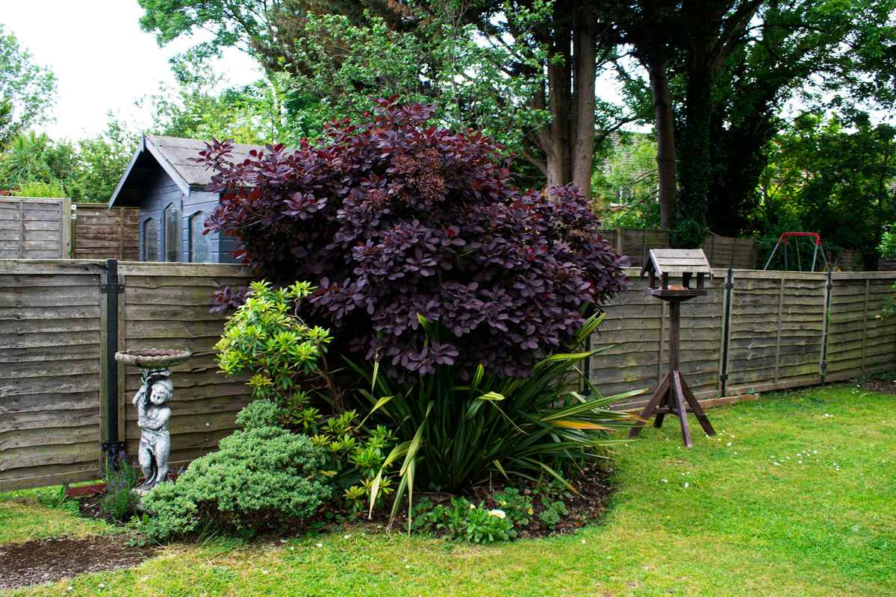

Cedar and vinyl fencing, sprinklers, and yards built for Cache Valley clay. Family-run out of Hyrum since 2009.
Get a bid. Marcy calls back the same day.Text a photo of your yard → (435) 555-0101The part you never see is the part that decides whether the fence leans by year three.
FencingWestern red cedar or vinyl, 6 ft privacy. Most backyards run $38–$52 a linear foot installed. Post holes 30 in., 4×4 posts every 8 ft.
SprinklersDrip on beds, rotors on lawn, and a smart controller set to the city's watering schedule. Spring start-ups $85. Blowouts in October, book by the 1st.
Yards & sodWe till in compost first, because Cache Valley clay will drown sod if you skip it.
Snow removal (Nov–Mar)Driveways and small lots in Hyrum, Nibley, and south Logan. Plowed by 6 a.m.
Drag the handle. North Logan, May → August.

MayAugustSample photo. The "May" side is the same stock photo, desaturated for the demo.
| Cedar privacy fence, 6 ft | $42–$52 / ft |
| Vinyl privacy fence, 6 ft | $38–$48 / ft |
| Steel-frame walk gate | $425 |
| Sprinkler spring start-up | $85 |
| Fall blowout | $65 |
| Sod, prepped with compost | $1.90 / sq ft |
Why it ranges: rocky ground, slopes, and old fence removal add time. We price it after we walk it.
Hyrum, Wellsville, Nibley, Logan, Providence, North Logan, Hyde Park, and Smithfield.
We don't go past Smithfield. Not worth your drive fees.
Dale set his first fence post at 14 on his dad's place in Benson. He still sets them the same way: 30 inches deep, concrete crowned so water runs off, every one checked with a level, not eyeballed. We're a crew of six. You'll meet Dale at the bid and he'll be on site the day we pour. If something we built sags, call us. We'll come fix it.
Sample review (fictional)
"They came back in April to re-tension a gate nobody asked them to."
— K. Christiansen, Providence
Sample review (fictional)
"Tanner's plan saved us half our water bill."
— the Nielsons, North Logan